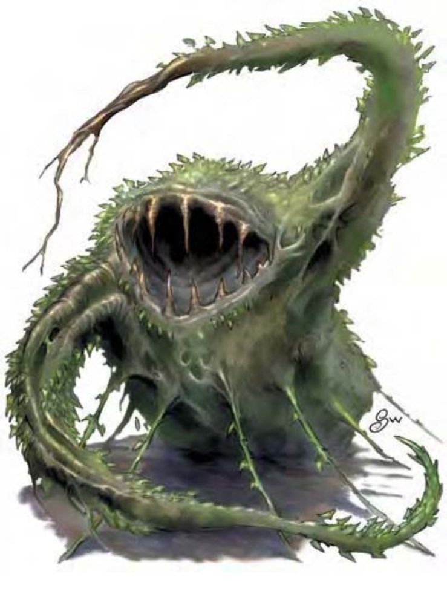

他们长得像是由枝叶撑起的一团草木，具有裂口，里头长满了"牙齿"，由尖锐的树枝与荆棘构成。
触手魔藤可能是植物受到下流魔法影响而突变，也可能是来自另一个实存界的生物。更甚者，这些理论可能同时成立。
触手魔藤可昂起15英尺高，重达3500磅。
触手魔藤最著名的能力就是其草木身体可以持续生长或再生。枝叶可在数分钟内长出，但需先摄取大量肉类。
触手魔藤让动物及其他植物型生物胆寒，他们会回避他，甚至在24小时内都不敢靠近他所待过的地方。
| 资料栏位 | 触手魔藤 (Tendriculos) 超大型植物 |
| 生命骰 | 9d8+54 (94HP) |
| 先攻 | -1 |
| 速度 | 20英尺 (4格) |
| 防御等级 | 16 (-2体型、-1敏捷、+9天生)、接触7、措手不及16 |
| 基本攻击/擒抱 | +6 / +23 |
| 攻击 | 啮咬+13近战 (2d8+9) 及2触须+8近战 (1d6+4) |
| 全力攻击 | 啮咬+13近战 (2d8+9) 及2触须+8近战 (1d6+4) |
| 占据/触及 | 15英尺 / 15英尺 |
| 特殊攻击 | 精通擒抱、麻痹、生吞 |
| 特殊能力 | 昏暗视觉、植物特性、再生10 |
| 豁免 | 强韧+12、反射+2、意志+4 |
| 属性 | 力量28、敏捷9、体质22、智力3、感知8、魅力3 |
| 技能 | 躲藏+9、聆听+1、潜行+1、侦察+1 |
| 专长 | 警觉、钢铁意志、猛力攻击、隐匿 |
| 环境 | 温带森林 |
| 组织 | 单独 |
| 宝藏 | 十分之一钱币、50%宝物、50%物品 |
| 阵营 | 总是绝对中立 |
| 进化 | 10-16HD (超大型)、17-27HD (巨型) |
| 等级修正值 | ― |
触手魔藤的攻击粗暴又拚命，他们不时会在深邃森林中游荡或停留在长满草木的地方伪装成草堆等待猎物。他会用最快的速度尽可能地吞食血肉。
精通擒抱 (特异)：当触手魔藤啮咬到体型小上1级的对手时，即可利用即时动作进行啮咬攻击 (视为擒抱)，且不会引发对方借机攻击。如果啮咬成功，则可定住对手，在次轮生吞对手。
触手魔藤亦可在使用触须攻击时进行精通擒抱。如果擒抱成功，则可定住对手，并举起放进嘴里，视为即时动作，自动造成啮咬伤害。
生吞/麻痹 (特异)：如果对手被触手魔藤擒住 (见前述"精通擒抱")，则一旦通过擒抱检定，就可将对方生吞下去。一旦落入触手魔藤体内，被擒住的生物必须通过强韧检定 (DC=20)，否则会被消化液麻痹3d6轮，每轮受到2d6点强酸伤害。每轮都需重新进行豁免检定。豁免检定DC的调整值与体质调整值相同。
被生吞的对手若未被麻痹，且通过擒抱检定，则可试着爬出。爬出时会落在触手魔藤的口中，再通过一次擒抱检定才能逃出。被生吞的对手亦可试着用轻型穿刺或挥砍武器来打开一条生路，在对内腔 (AC=14) 造成25点以上伤害后，可破开一道足以逃脱的开口。一旦一个被生吞的生物逃脱，则肌肉运动会将这道开口封起，其他被生吞的生物必须另行逃脱。
触手魔藤的内腔可容纳2个大型、8个中型、32个小型、128个超小型及512个微型以下的生物。
再生 (特异)：敲击武器和强酸可以对触手魔藤造成正常伤害。
触手魔藤若失去肢体或身体器官，1d6分钟后就会重新长出来。如果将断掉的肢体装在残肢的位置，立刻就可以接续。